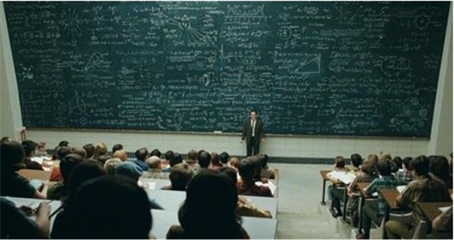

오랫동안 풀리지 않은 수학 7대 난제... 풀면 엄청난 상금이
2018-11-30 23:25
수학 문제를 맞히면 100만 달러, 한화로 11억의 돈을 준다고 하면 솔깃하지 않은 사람이 있을까? 아마 당장 도전하고 싶은 마음이 생긴 120사람이 있을 것이다. 실제로 세계 각 분야의 천재들의 집합소인 하버드 대학교에서는 2000년에 수학 천재들이 모여서 클레이 수학 연구소를 세웠고 수학 7대 난제를 만들었으며 문제를 푼 사람한테는 100만 달러의 상금을 준다고 홍보했다. 이 문제들에 대해 클레이 수학 연구소는 오랫동안 풀 수 없었던, 수학에서 가장 기본적이고 가장 중요한 7개의 난제라고 발표했다.
P-NP 문제
P-NP 문제는 컴퓨터가 답이 될 수 있는 몇 개의 경우는 찾을 수 있지만 모든 경우는 찾기 힘든, 즉 경우의 수에 관한 문제이다. 이 문제에서 P는 결정론적 튜링기계를 사용해 답을 구할 수 있는 문제의 집합, NP는 다항 시간 내에 문제의 해답을 구할 수 없는 집합을 뜻한다. 이 문제는 모든 경우에 대해 해당된다. 경우의 수에 관련된 문제이기 때문에 아직 해결되지 않은 수학 7대 난제 중 하나인 P-NP 문제는 사람보다 컴퓨터가 풀 확률이 더 높으며 컴퓨터과학 분야에서 가장 중요하게 여겨지는 문제이다.
호지 추측
호지 추측은 기하학과 관련이 있는 난제이다. 이 추측은 '어떤 물체라도 기하학 조각의 조합이다,' 라는 가정을 증명하는 것이다.
푸앵카레 추측
푸앵카레 추측은 최초로 해결이 된 난제로 프랑스 수학자 앙리 푸앵카레가 제기한 명제이다. 2차원 구면에서 단일 연결이라는 속성이 3차원 표면에서도 성립하는지에 대해 증명하는 추측으로
리만 가설
리만 가설은 독일 수학자 베른하르트 리만의 추측으로 역사상 가장 복잡한 문제라고도 할 만큼 난이도가 높은 문제이다. 이 가설은 리만 제타 함수의 자명하지 않은 해의 실수부는 모두 ½이라는 것이다. 이 가설을 제시한 리만은 1859년 베를린 학술원에 가입하기 위해 ‘주어진 수보다 작은 소수의 개수에 관하여’라는 제목의 논문을 제출하였는데, 그의 논문은 소수정리에 대한 논문이었으며 소수의 개수만 다룰 뿐 가설을 증명하지는 않았다. 그는 리만 가설이 참이라는 가정 아래 소수의 개수는 적분 함수에 점근한다고 보이며 소수 정리를 증명하였다. 그의 자세한 증명은 그가 죽고 가정부가 집을 정리하면서 자료를 불태워 안타깝게도 볼 수 없게 되었다.
양-밀스 질량 간극 실험
고등 물리 과목에서 흔히 들을 수 있는 쿼크나 글루온 같은 아원자 입자의 물리를 다룬 양-밀스 질량 간극 가설은 가벼운 입자마저도 양의 질량을 가진다는 가설이다. 이 가설은 바닥상태의 에너지와 가장 낮은 들뜬 상태의 에너지의 차이인 질량 간극 현상의 원리를 수학적으로 설명해야 한다.
나비에-스토크스 방정식
N-S방정식이라고도 하는 나비에-스토크스 방정식은 점성을 띄는 유체 운동을 나타내는 비선형 편미분 방정식이라고 한다. 2차원에서는 이 방정식이 해결되어 현재 사용되고 있지만 3차원에서는 아직까지 나비에-스토크스 존재성과 매끄러움 문제로 3차원 강해가 항상 존재한다는 것을 증명하지 못했기 때문에 수학 7대 난제에 올랐다.
버치-스위너턴다이어 추측
버치-스위너턴다이어 추측은 방정식이 유리 해를 유한개를 가지는지 혹은 무한개를 가지는지 알 수 있는 간단한 방법의 존재 여부에 대한 추측으로 1965년에 브라이언 버치와 피터 스위너턴다이어가 에드삭 컴퓨터를 이용하여 수치적인 데이터를 통해서 추측을 발표했다. 현재 수학에서 가장 중요한 문제로 각광받는 수학 7대 난제 중 하나로 40여 년간 해결되지 않았고 아직도 미해결 난제이다.